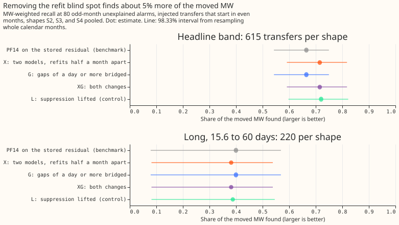
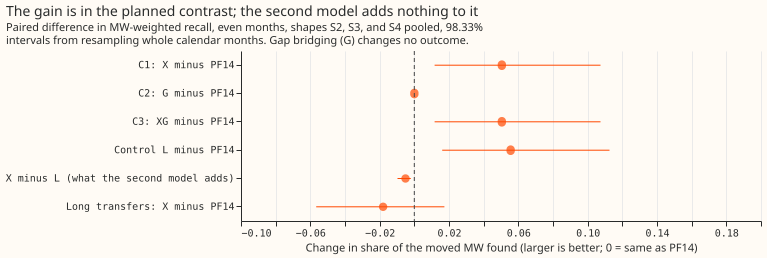
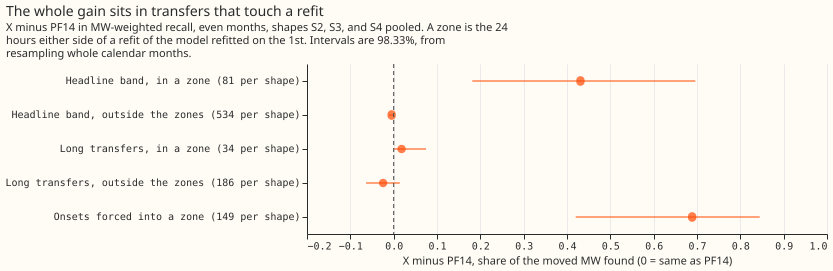
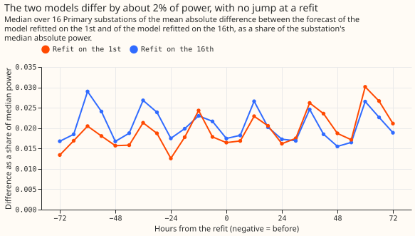

Experiment 71 (SW2-18, part of the switching-event detector series): does ignoring alarms near a refit make the detector miss load transfers?
The detector ignored every alarm within 24 hours of the monthly refit of its forecasting model. Lifting that rule recovers about 5% of the moved power, and the second model that we added to replace the ignored alarms adds nothing to the recovery on injected transfers. A load transfer is a switching operation that moves part of one Primary substation's demand (the 11 kV or 6.6 kV substation feeding local distribution circuits) to neighbouring substations for some hours or days. The single-step detector D0M subtracts an XGBoost forecast that uses no past power from the measured power, averages that residual over 24 hours, and raises an alarm when the average steps by 4.0 noise units or more. One noise unit is the usual size of that 24-hour step on a substation's odd-numbered months. The benchmark PF14 is D0M with a rule that ends each alarm interval at the first opposite step of at least half the onset step. A transfer counts as found when an alarm starts within 2 hours of its start and its end falls within the larger of 6 hours and 10% of its duration. We score each detector by MW-weighted recall, the share of the moved power in megawatts (MW) that sits in found transfers.
Three changes to the detector were tested on injected transfers: synthetic transfers added to the substations' real power history. The XGBoost model is refitted on the 1st of every month, and PF14 ignores every alarm within 24 hours of a refit, so a transfer that starts there is never found. Arm X adds a second residual model refitted on the 16th. At each stamp the step statistic comes from the first model, except within 24 hours of the first model's refit, where it comes from the second model. Arm G makes the step statistic bridge data gaps of a day or longer. Arm XG makes both changes. Each arm's alarm threshold is set so that it raises at most 80 unexplained alarms (alarms more than 24 hours from any closure in the logbook of National Grid Electricity Distribution, NGED) on odd-numbered months, and all contrasts are read on transfers that start in even-numbered months. Arm X found 0.715 of the moved power against 0.665 for PF14, a gain of +0.050 (98.33% interval +0.012 to +0.107; 98.33% is 95% corrected for three planned contrasts). The whole gain lies in the transfers that start or end within 24 hours of a refit. Of the 3 real transfers that start at a refit, arm X found all 3, where PF14 found none.

Verdict
supported by the rule fixed in the plan: the lower end of C1 lies above zero and its point value
is at least +0.01.
| Contrast (even months, S2, S3, and S4 pooled, headline band) | Change in MW-weighted recall |
|---|---|
| C1, X (two models) minus PF14 | +0.050 (+0.012 to +0.107) |
| C2, G (gap bridging) minus PF14 | +0.000 (+0.000 to +0.000) |
| C3, XG (both) minus PF14 | +0.050 (+0.012 to +0.107) |
| Control L (suppression lifted, no second model) minus PF14 | +0.056 (+0.016 to +0.113) |
| X minus L (what the second model adds) | -0.005 (-0.010 to -0.002) |
| Long transfers (15.6 to 60 days), X minus PF14 | -0.018 (-0.057 to +0.017) |

PF14 misses 0.335 of the moved MW and X misses 0.285, mostly in transfers with no alarm at the start. The missed share is one minus the recall. For PF14, 0.301 of the moved MW sits in transfers with no alarm at the start and 0.035 in transfers whose start was found and whose end was wrong. For X the two shares are 0.265 and 0.019. Each arm's threshold is the lowest on a 0.05 grid whose odd-month count of unexplained alarms is at most 80. The injected shapes S2, S3, and S4 are a constant MW moved, a share of each receiver's own profile, and a mix fitted to the labelled real transfers. The headline band is the injected transfers moving 25% to 40% of the receiving load for over 1 day, and the long set is the transfers lasting 15.6 to 60 days.
| Arm | Threshold | Unexplained alarms, odd / even months | Headline band | Long set |
|---|---|---|---|---|
| PF14 (benchmark) | 4.0 | 80 / 80 | 0.665 (0.543 to 0.750) | 0.400 (0.079 to 0.569) |
| X, two models | 4.1 | 75 / 80 | 0.715 (0.591 to 0.818) | 0.382 (0.082 to 0.538) |
| G, gaps bridged | 4.0 | 80 / 80 | 0.665 (0.543 to 0.750) | 0.400 (0.079 to 0.569) |
| XG, both | 4.1 | 75 / 80 | 0.715 (0.591 to 0.818) | 0.382 (0.082 to 0.538) |
| L, suppression lifted | 4.05 | 79 / 84 | 0.720 (0.597 to 0.822) | 0.388 (0.082 to 0.546) |
Absolute MW-weighted recall on even months with 98.33% intervals. An onset tolerance of the larger of 6 hours and 10% of the duration, instead of 2 hours, raises every arm by about 0.03 (PF14 0.694, X 0.741) and does not separate the arms.
The gain sits in the refit zones
The gain comes from transfers that start or end within 24 hours of a refit, and the 13% of transfers in that zone carry all of it. A zone is the 24 hours either side of a refit of the model refitted on the 1st. Of the 615 headline-band transfers per shape that start in even months, 81 per shape start or end in a zone. PF14 finds 0.177 of the moved MW there and X gains +0.431 (+0.182 to +0.696). Outside the zones X is slightly worse, -0.005 (-0.011 to -0.001), because the alarm threshold rises from 4.0 to 4.1 to hold the alarm count. We also drew 300 further transfers with onsets forced into a zone, of which 149 start in even months. On those 149, PF14 finds 0.000 and X finds 0.689, a gain of +0.689 (+0.420 to +0.845), which shows the mechanism cleanly.

The second model does not improve on lifting the suppression for injected transfers. The control L only stops ignoring alarms near a refit and keeps the first model throughout. L finds 0.720 and X 0.715. L raises 84 unexplained alarms on even months where X raises 80. A real alarm is an alarm on the real residual, with no transfer injected. Of L's 311 real alarms, 73 lie within 24 hours of a refit of either model, against 66 of X's 297 and 46 of PF14's 297. The refit jump therefore produces a few extra alarms in L, and those extra alarms are too few to lower L's recall.
Gaps, and the real transfers
Gap bridging changes no outcome, because the panel has nothing to bridge. The residual panel holds 188 gaps inside its 16 series. Only 7 last 13 half-hours or longer, and only 3 last a day or longer. G differs from PF14 in the outcome of 0 of 1,860 injected transfers (the 1,160 headline-band, 400 long, and 300 zone-drawn transfers, under one shape). The 6 real transfers that experiment 69 called "data gap" all lie on series 12 and 13, whose residual panel holds no rows before March 2026 (series 12) and February 2026 (series 13), so there is no data on either side of those transfers to bridge.
X finds 10 of the 35 real transfers over 1 day, against 8 for PF14. Its MW-weighted recall is 0.350 against 0.156. The 3 real transfers that start at a refit are 3.9, 2.5, and 2.0 MW; X raises an onset alarm for all 3, and L for 2 of them. X also finds one further transfer of 1.0 MW whose onset PF14 found but whose end PF14 placed wrongly. X loses two small transfers (0.6 and 0.5 MW) when the alarm threshold rises to 4.1, so the 8 found by PF14 become 8 + 4 - 2 = 10. The other 21 of the 24 transfers with no PF14 alarm at the start are unchanged under every arm: 6 in "data gap", 3 with an alarm 2 to 12 hours from the start, 8 with a sharp step of 2 to 4 noise units, 2 with a spread or late step, and 2 with no visible step. | Class of the 24 transfers with no PF14 alarm | Transfers | Onset alarm under X | Found under X | |---|---|---|---| | Monthly refit | 3 | 3 | 3 | | Data gap | 6 | 0 | 0 | | Alarm outside the 2-hour tolerance | 3 | 0 | 0 | | Sharp step of 2 to 4 noise units | 8 | 0 | 0 | | Spread or late step of 2 to 4 noise units | 2 | 0 | 0 | | No step visible | 2 | 0 | 0 |
Recall by donor step
X finds more of the steps of 6 or more noise units with a metered receiver and more of the 4 to 6 unit steps with no metered receiver, and one fewer at 4 to 6 units with a metered receiver. The donor is the substation that loses load and a receiver is a substation that gains it; a receiver is metered when its power is in the telemetry. The table counts transfers found out of transfers, summed over S2, S3, and S4, on the headline-band transfers that start in even months, by the donor's step in 24-hour noise units. The table omits donor steps under 2 noise units (143 transfers with a metered receiver, of which each arm finds 8, and 66 with none, of which each arm finds none) and the 13 transfers with an unmetered receiver and a step of 6 to 10 (PF14 finds 7 and X 10). The printed report also gives G, XG, and L.
| Donor step | Receiver | Transfers | PF14 | X |
|---|---|---|---|---|
| 2 to 4 | metered | 135 | 85 | 90 |
| 4 to 6 | metered | 136 | 111 | 110 |
| 6 to 10 | metered | 184 | 173 | 178 |
| 10 or more | metered | 374 | 334 | 363 |
| 2 to 4 | unmetered | 537 | 68 | 72 |
| 4 to 6 | unmetered | 257 | 125 | 138 |
Do the two residual models disagree?
The two residual models' step statistics differ by far less than the alarm threshold, and their forecasts show no jump at either refit. Where neither model refits within 24 hours, the median absolute difference between the two statistics is 0.136 noise units, taking each series' median and then the median over the 16 series (0.211 for the series with the largest difference). The 99th percentile of the difference is 0.889 noise units, again the median over the 16 series. Both are below the 4.0 noise units that raise an alarm. The forecasts themselves differ by about 2% of a substation's median power at every hour from the refit. The printed report does not count return steps near the splice stamps; it counts alarms only.

What held in the prediction and what did not
- Held: the zone split (+0.431 where a gain of at least +0.3 was predicted, and -0.005 where about 0 was predicted); C2 within +-0.003 (it is +0.000); at least 2 of the 3 real refit transfers found (3 are); the threshold rising above 4.0 (it is 4.1); PF14 finding about 0.67 of the moved MW (it finds 0.665).
- Not held: C1 of +0.01 to +0.04 (it is +0.050, above the range), an interval about 0.05 wide
(it is 0.095 wide), and
inconclusiveas the likely verdict (the verdict issupported).
Limits
- The detector uses up to 14 days of hindsight, so it serves training-time masks and the event table, not live inputs.
- Injected transfers do not distinguish X from L. Injection adds the same power to both models' residuals on top of the real refit jumps, and the control L, which keeps the first model's jumps, loses no recall to them. Only the 3 real refit transfers separate the two arms.
- The real transfers number 35 and the refit class 3, so "3 against 2" is not a result with an interval.
- The residual that fixes an interval's end when no return step is found switches to the second model inside a zone. That switch can change the level by the difference between the two residual models.
- The scaled onset tolerance is scored on injected transfers only, so the real transfers table uses the 2-hour tolerance.
- A fresh draw is new in the placement of transfers and in the injection noise only. It reuses the same residual table, series, months, and set of 25 long operations as experiments 66 and 69.
A correction to the plan's wording
The pre-registered prediction says that series 12 and 13 have "no power telemetry at all" before December 2025 and February 2026. The raw power table holds rows for both series from 2024, and the residual panel is what starts later (March 2026 for series 12 and February 2026 for series 13). The conclusion is unchanged, because bridging needs residuals on both sides of a gap.
Reviews
- Plan review (Sonnet agent): accepted reordering the verdict rule so that
small gainis tested beforerefuted, rewording the hypothesis to concern arm X only, a zone split of C1, a draw with onsets forced into the zones, the splice-agreement and alarm counts near the splice stamps, a control arm with the suppression lifted, a statement of the second model's training cut-off and a refit of the first model that must return the stored forecasts (it does, to the last digit), the tuning rule for the alarm count, and the refit guard on gap bridging. Rejected calibrating the noise scale on pseudo-gaps, because arm G is descriptive and almost nothing is bridged, and an example time series of the spliced statistic, because the splice-agreement figure covers the question the example would answer. - Code review (Sonnet agent): found no leakage and no splice error. Accepted an off-by-one in the refit guard of gap bridging, a tolerance on the check that the first model's refit reproduces the stored forecasts, a finite check on the power comparison, a warning in place of a stop when an arm exceeds 80 alarms, and the two missing planned counts (alarms near the splice stamps and transfers whose outcome the gap bridging changes). The count of return steps near the splice stamps was not added.
- Fact check against the printed report (Sonnet agent): every number matched. Accepted rewording the claim about series 12 and 13 (their residual panel has no earlier rows, but the raw power table does), "at most 80" for arms with fewer than 80 odd-month alarms, a note on the rows left out of the donor-step table, an account of how 8 found transfers become 10, and two further items of the held and not-held lists. Rejected nothing.
- Prose review (Sonnet agent): accepted rewriting the title and the opening so that D0M, PF14, noise units, found, injected, unexplained alarms, and the 98.33% interval are defined before use, defining the injected shapes and bands, splitting several leads, using "alarm threshold" and "second residual model", replacing the money metaphors, and several count clarifications. Rejected rewriting the pre-registered front matter.
What the next experiment should answer
Two remaining groups of misses are not mechanical: 8 real transfers with a sharp step of 2 to 4 noise units, and 3 with an alarm 2 to 12 hours from the labelled start. Neither group changed under any arm here. A threshold lowered to reach the sharp small steps raises the unexplained-alarm count, and experiment 69's weak-alarm rule, which accepts a weak alarm that a matching step back confirms, did not reach them without losing recall elsewhere. The scaled onset tolerance did not separate the arms on injected transfers, so the 3 timing cases need a score on real transfers with a duration-scaled tolerance to say whether they are a scoring artefact.
Code: ml-experiments/00071-sw2-18-refit-offset-and-gap-bridging/, with every number printed by
e00071_report.py.